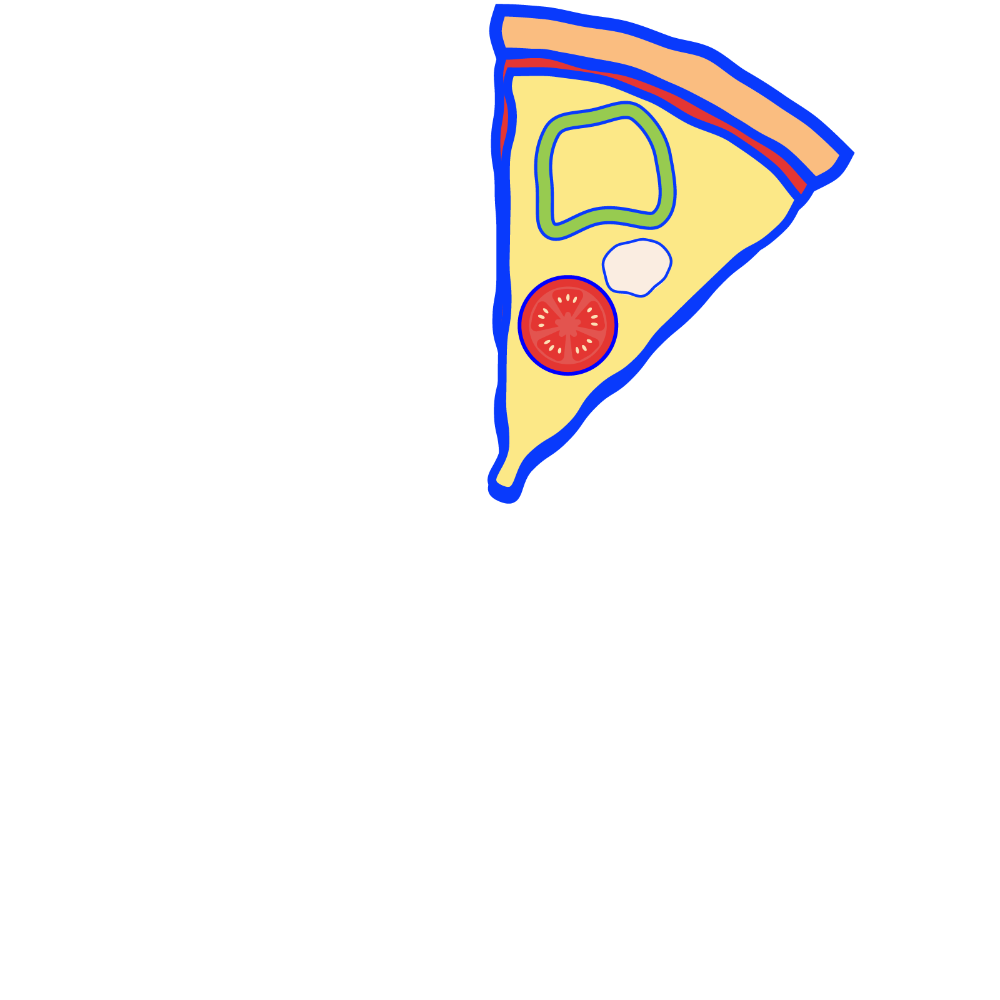
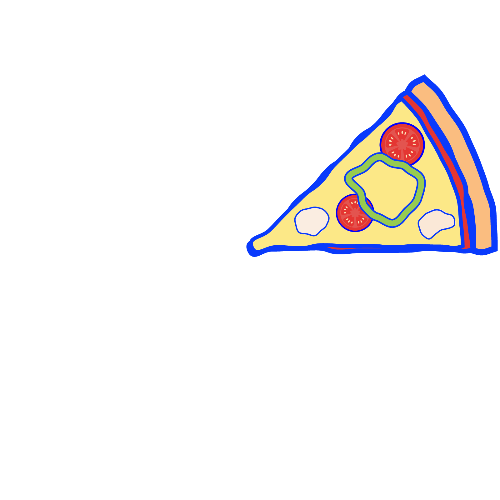
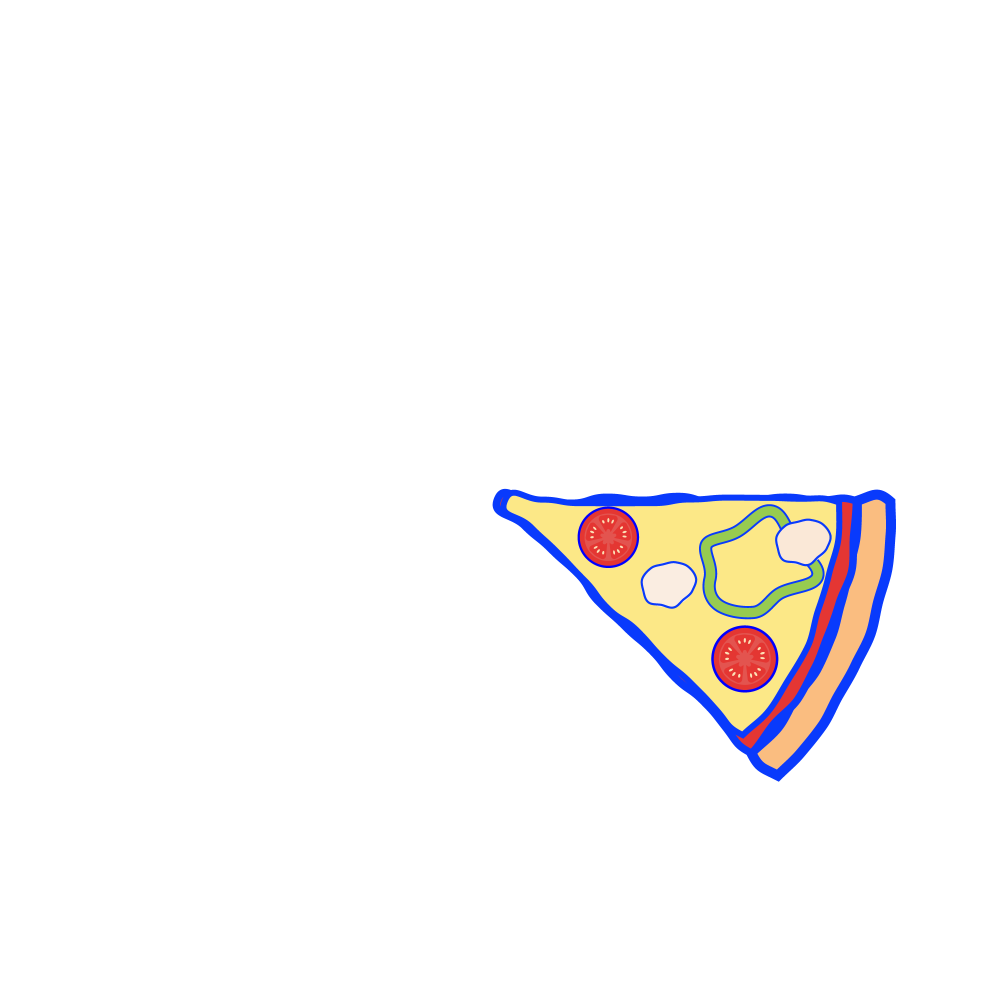
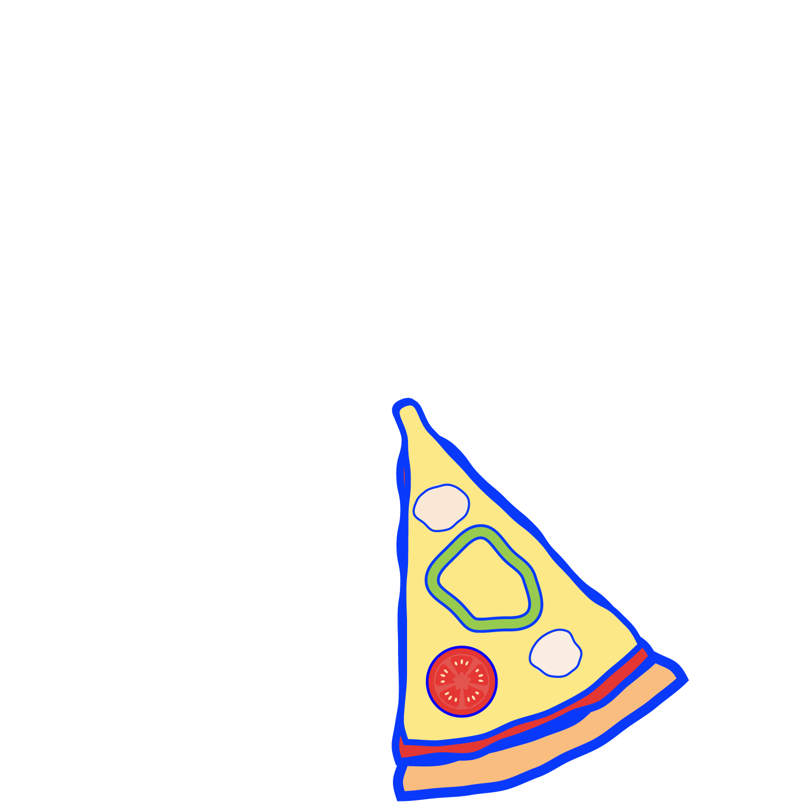
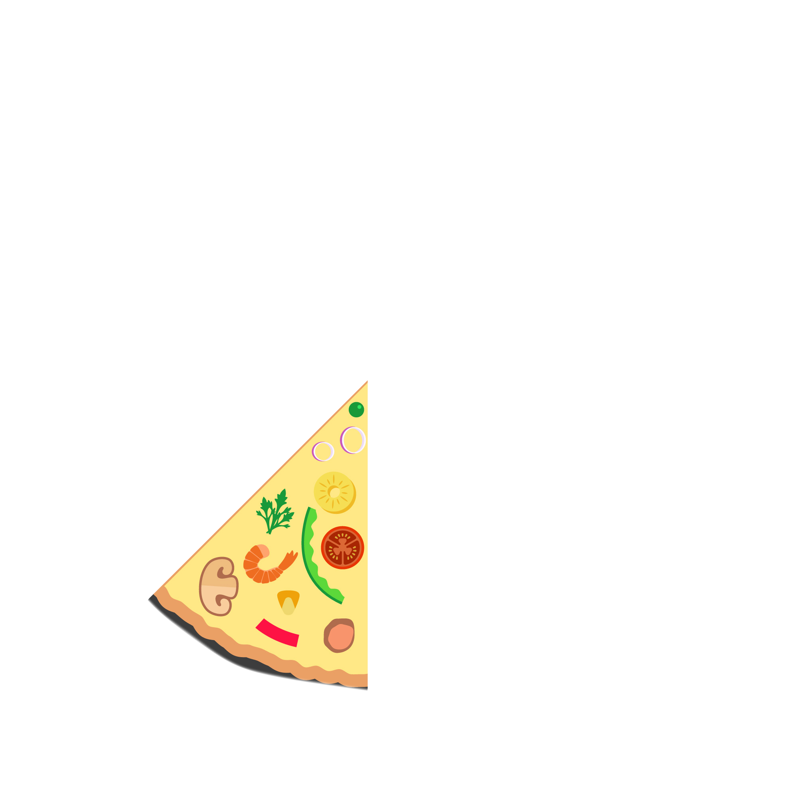
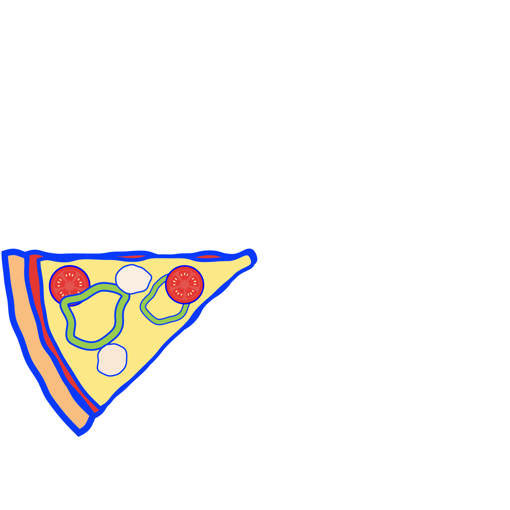
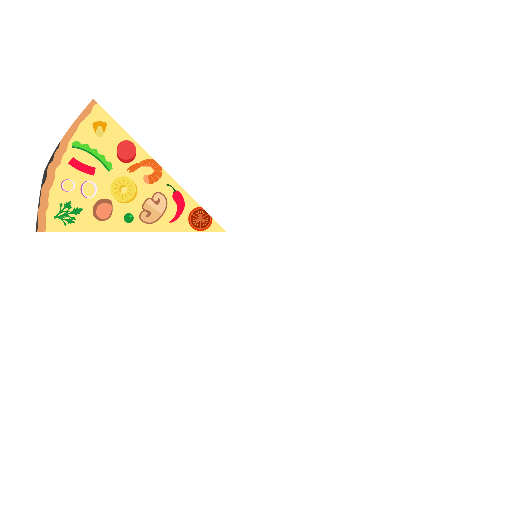
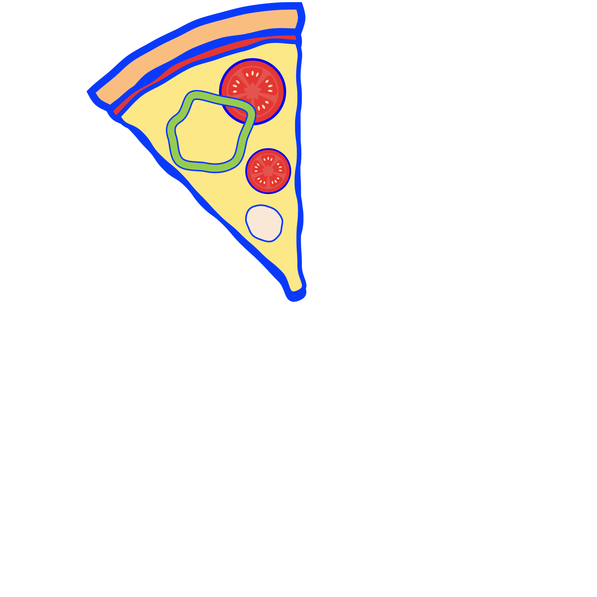
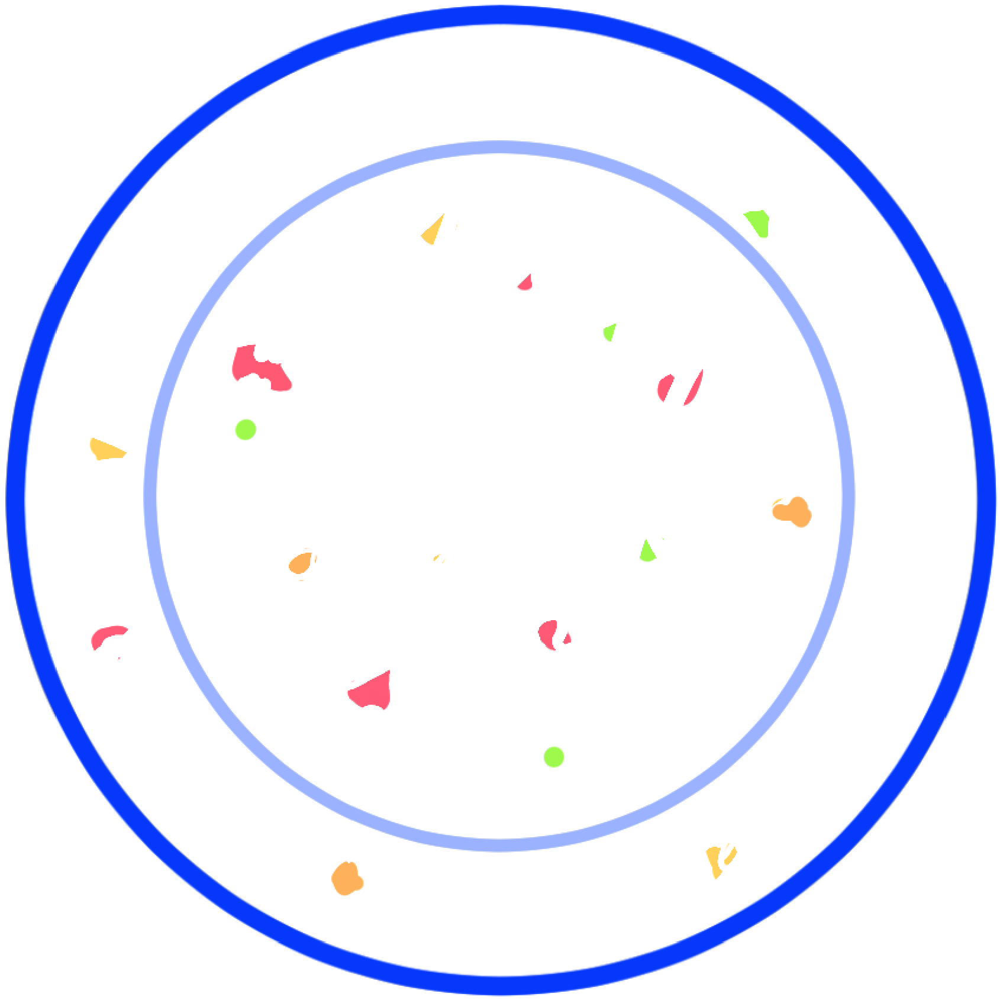

Skill









HTML/CSS
学習歴：4ヶ月
セマンティックタグを意識したコーディングが可能です。また、レスポンシブデザインを実装し、スマートフォンに対応したウェブサイトの制作が可能です。
JavaScript
学習歴：1ヶ月
progateで基礎を学び、簡単なアニメーションや動的な要素の実装が可能です。
またjQueryを使用した、スライダーやUIの実装にも対応可能です。
Git
学習歴：1ヶ月
基本的なGitコマンドを理解し、GitHubを使用したバージョン管理が可能です。
コミットやプッシュなどの基本操作を行い、制作物の履歴を管理することができます。
Illustrator
学習歴：4ヶ月
基本的な操作を理解しショートカットキーも使用できます。ロゴやフライヤーの制作が可能です。
ポートフォリオに使用しているピザとハンバーガーのイラストもIllustratorで制作しました。
Photoshop
学習歴：4ヶ月
基本的な操作を理解し、写真の加工や合成などを行うことが出来ます。
明るさや色味の調整、不要な要素の修正などにも対応可能です。
Premiere Pro
学習歴：1ヶ月
カット編集やテロップの挿入、簡単なエフェクトの追加を行うことができます。
キーフレームを使用したアニメーションやトランジションの設定にも対応可能です。
Contact
下記メールアドレスにてご連絡ください。